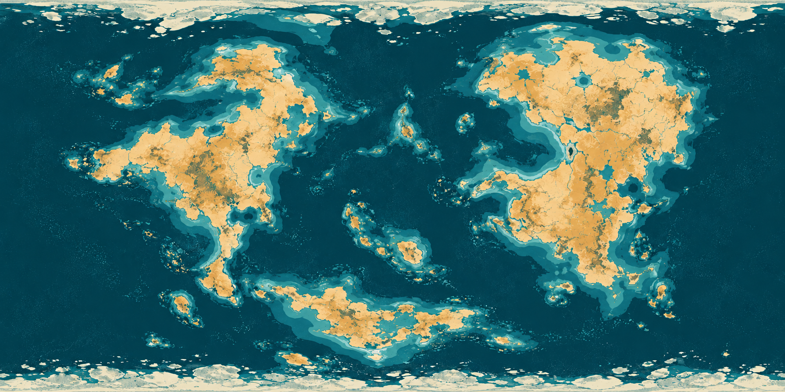
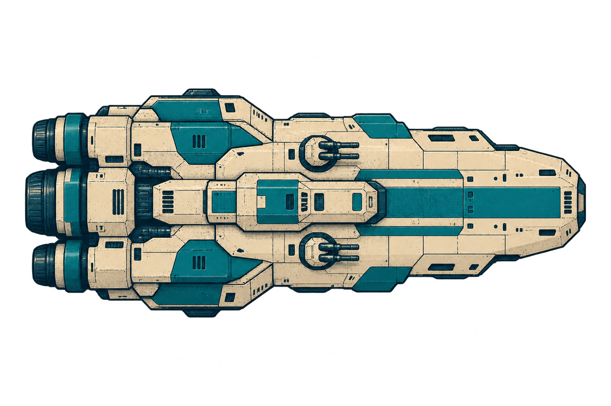

One illustrated planet and one capital warship. Inspect the artwork, then judge the same assets at game scale. No effects.
Actual game size · 68 px planet / 26 px warship at full-width view
PlanetThe generated surface wraps around a sphere in a 2D canvas. Surface features rotate; the lighting, outline, and labels stay fixed. One revolution takes 48 seconds.
WarshipOne rigid sprite cruises, turns, and enters orbit. Its shape stays identical throughout. Arrival follows an 8-second curve; each orbit takes 18 seconds.
What this proof establishes
Generated source art can be isolated and animated together in the atlas style. The lower strip exposes readability at normal scale; the checkerboard exposes unwanted halos. This is a standalone asset preview. It does not establish crowded-battle readability, game-renderer integration, or mobile performance.
Motion is procedural: no independently generated animation frames, no 3D engine, and no animated engine or combat effects. Both input PNGs remain unchanged. Planet projection and ship framing are handled by the preview.
Loading source art…

